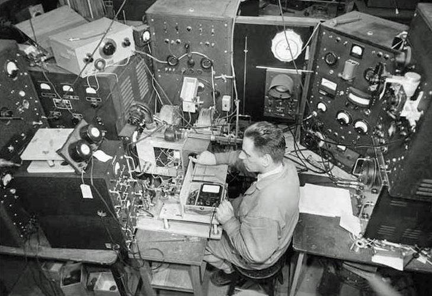
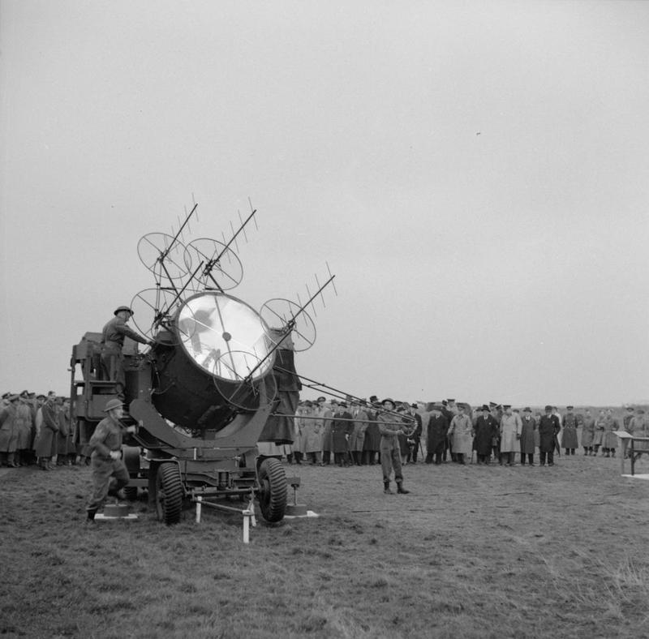

The Evolution of Radar and Electronic Warfare in World War II
World War II marked a fundamental shift in global military science, representing the transition from visual-range reconnaissance to high-frequency electromagnetic warfare. The development and deployment of radar (Radio Detection and Ranging) fundamentally altered naval engagements, night-bombing campaigns, and aerial combat across every major theater of war.
The Cavity Magnetron: The Secret Weapon of 1940
Early radar operated on long radio wavelengths, requiring massive fixed ground antennas. The true technological breakthrough occurred in February 1940, when physicists John Randall and Harry Boot at the University of Birmingham invented the **multi-cavity magnetron**—a compact tube capable of generating short-wavelength (centimetric) microwave signals with high power output.
Carried secretly to the United States during the Tizard Mission in late 1940, the magnetron enabled the construction of radar units small enough to fit inside fighter aircraft nose cones and ship search towers. Centimetric radar transformed anti-submarine warfare in the Atlantic, allowing Allied patrol aircraft (equipped with H2S radar) to spot surfaced U-boats at night through dense fog, effectively ending the U-boat's tactical advantage by 1943.


The Battle of the Beams and Electronic Countermeasures
As nocturnal air raids escalated, scientists waged a silent "Battle of the Beams." The German Luftwaffe introduced precision radio navigation systems like Knickebein and X-Gerät, which guided bombers along radio beams intersecting over target cities. British scientists, led by R. V. Jones, developed countermeasures to jam and bend these radio beams, causing enemy bombers to drop payloads harmlessly over open fields.
By 1943, both sides deployed physical radar chaff. Codenamed **"Window"** by the RAF and **"Düppel"** by Germany, planes dropped thousands of metallic aluminum foil strips cut to specific lengths matching enemy radar frequencies. When released into the air, the foil created massive clouds on radar screens, masking bomber streams and blinding ground anti-aircraft batteries during major raids over Hamburg and Berlin.
The Groundwork for Modern Warfare
By the conclusion of the war in 1945, electronic warfare had evolved from simple radio pulses to automated gun-laying radars, proximity fuses, signal jamming, and early warning systems. The scientific breakthroughs forged during WWII laid the foundation for modern telecommunications, air traffic control, and electronic defense systems.